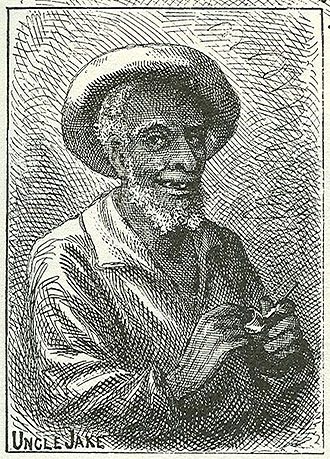

|
 We don't meet Jake as a character, but Huck mentions him to Tom as someone who'll give him food and a place to sleep while he keeps watch for Injun Joe's treasure. "That's a mighty good nigger, Tom," Huck says. "He likes me, becuz I don't ever act as if I was above him. Sometimes I've set right down and eat with him. But you needn't tell that. A body's got to do things when he's awful hungry he wouldn't want to do as a steady thing." Though he enjoys playing with Huck because he's been forbidden to, Tom in turn "did not care to have Huck's company in public places." In these passages the novel reminds us of how stratified by class and race was the "sleepy little village of St. Petersburg." It's interesting that the narrative here connects Huck with an adult slave -- almost as soon as MT finished Tom Sawyer he began writing Huck Finn, and by Chapter 8 of that novel Huck and Jim (a different Jim than the boy in Tom Sawyer) have their first meal together. The Barrett Collection, UVA PS1306 .A1 1876b |